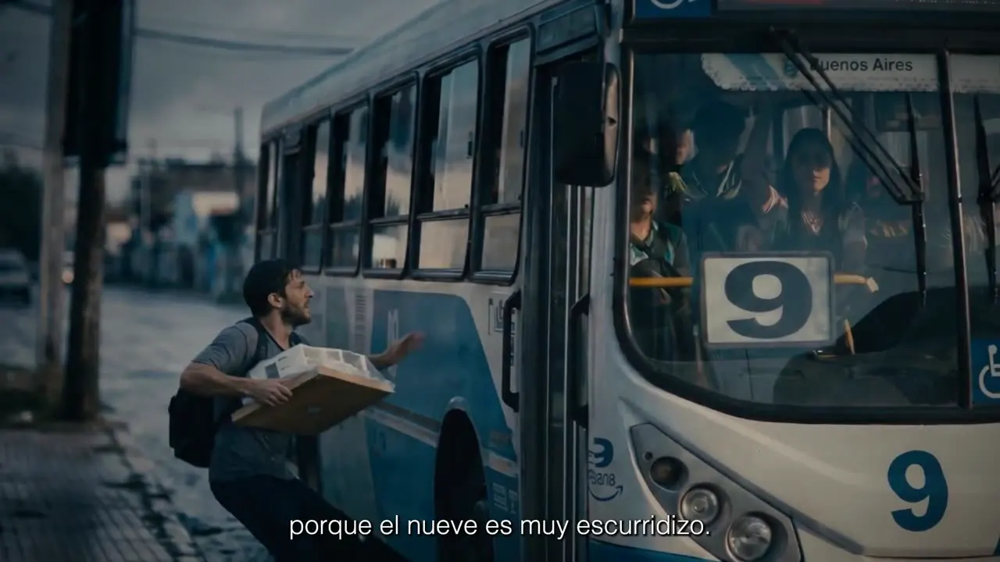
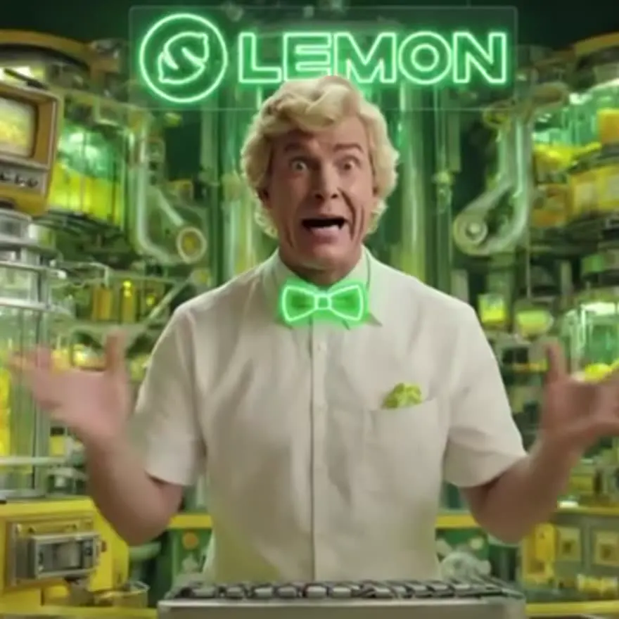
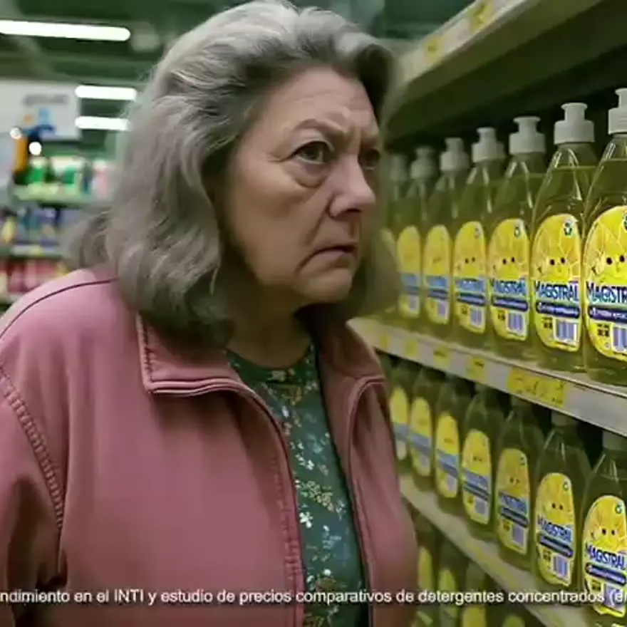
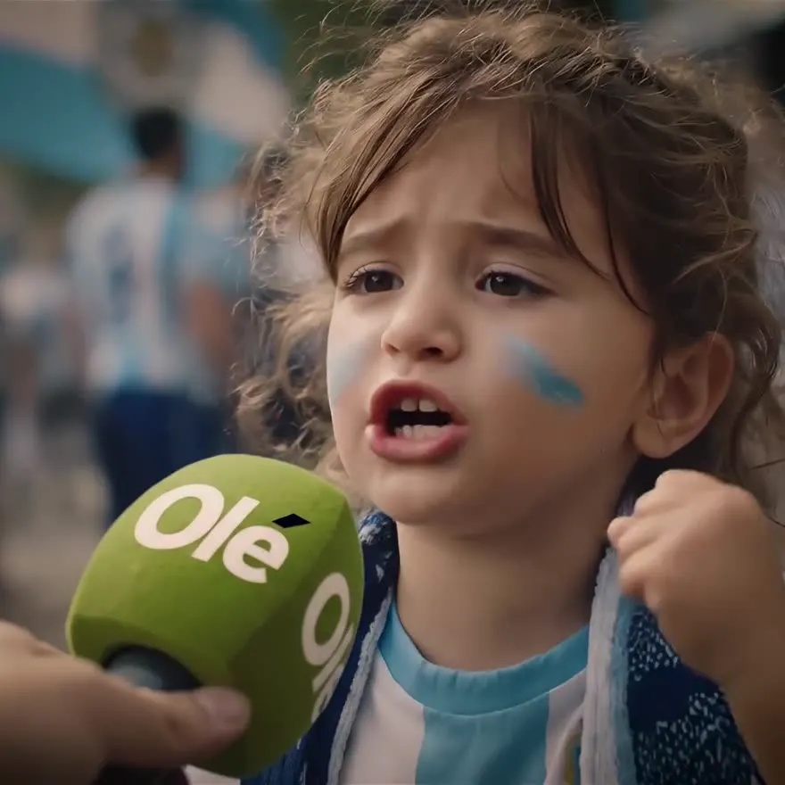
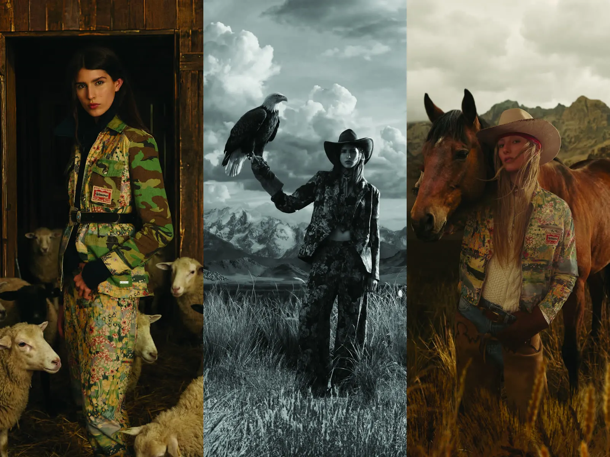
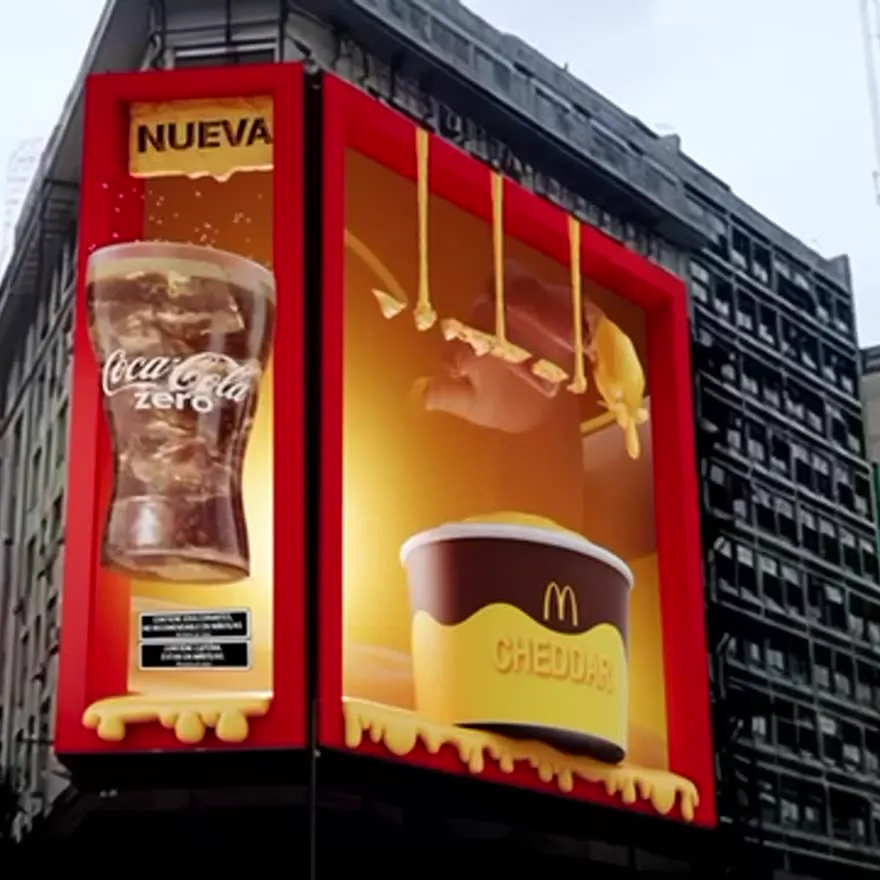
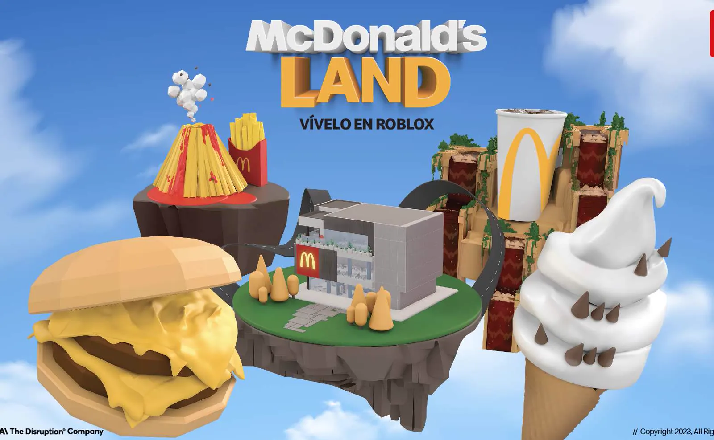

REEL ’26 — Planetlambo, productora de IA y Tech Market Lab en Latinoamérica
Productora de IA y experiencias inmersivas para marcas
El Tech Market Lab
más inspirador
Estrategia, creatividad e IA de frontera, integradas para diseñar, producir y escalar campañas para marcas curiosas.
-
01
Producción y Postproducción Publicitaria con IA
Sistemas de contenido AI-native end-to-end — contenido publicitario, híbrido o 100% producido con IA. Del concepto a los hero assets y formatos always-on.
-
02
Experiencias Inmersivas
AR, VR, entornos interactivos, magic mirrors y experiencias espaciales construidas a través de los sentidos. Creamos mundos que exigen toda tu atención.
-
03
Soluciones Autónomas con IA
Agentes multimodales para engagement, personalización e interacción en tiempo real a escala de marca. Sistemas inteligentes que evolucionan con tu audiencia.
-
04
Workshops
Programas hands-on que integran IA generativa en la operación diaria de marca de tu equipo. No construimos solo para vos; construimos con vos.
Campañas Seleccionadas

Heroicas Un monumento a los verdaderos héroes del Mundial: los que se levantan temprano, bancan la cábala y nunca pierden el hambre de gloria. Junto a Sandwich. La Mega Charrúa Campaña mundialista para Mostaza Uruguay que combina realización tradicional con IA generativa. Junto a la agencia Cheche.
La Lemonera Campaña hero producida por IA para recompensas semanales con storytelling cinematográfico.
Magistral Campaña 100% producida por IA con fotorrealismo cinematográfico. Workflow end-to-end de IA.
Campaña Mundial Ya vimos a la Selección ganar, pero hay fans que todavía no pudieron vivir esa gloria. Olé celebra 30 años con el insight más humano del próximo Mundial. CasanChef Agente de cocina multimodal en WhatsApp con visión, lenguaje natural y recetas AI.
Wild Spirit Photoshoot de moda híbrido: modelos reales fotografiados en locaciones físicas, fusionados con entornos generados por IA generativa. Magic Mirror Experiencia en eventos con tecnología Magic Mirror, potenciada por computer vision para recomendaciones de cuidado capilar en tiempo real.
3D Billboards Own media 3D anamórfica inmersiva en la pantalla más grande de LATAM.
Menú Pixel Mundo virtual en Roblox conectando gameplay digital con items del menú real.Ningún proyecto coincide con este filtro.
Nuestro Lab
Planetlambo es un laboratorio tecnológico con una mirada AI-first antes que nada. Integramos creatividad, inteligencia artificial, estrategia y tecnología de frontera para diseñar, producir y escalar campañas que transforman marcas.
Mostaza · Unilever · McDonald's · Danone · Lemon · DreamCo · Salentein · Wanama · Olé · Grangy's · Extremas
FAQ
¿Qué es Planetlambo y qué hace?+
Somos un Tech Market Lab Global, trabajando para marcas en todo el mundo. Diseñamos, producimos y escalamos campañas publicitarias, experiencias inmersivas y agentes inteligentes para marcas líderes como McDonald's, Unilever y Danone. Integramos inteligencia artificial donde aporta valor — desde flujos híbridos con producción tradicional hasta workflows AI-native — según el brief de cada marca.
¿Cómo funciona la producción de contenido con IA?+
Operamos con un workflow flexible que se adapta al brief de cada marca. La IA puede integrarse en cualquier instancia del proceso: ideación y concepto, dirección de arte, generación visual, postproducción o adaptación multiplataforma. Según el caso, su rol va desde un aporte puntual en pipelines tradicionales hasta flujos end-to-end AI-native, acelerando tiempos hasta un 80% vs. métodos tradicionales.
¿Trabajan solo con producción 100% AI?+
No exclusivamente. Hacemos producción y postproducción publicitaria con IA: producciones híbridas que combinan rodaje tradicional con IA generativa, postproducción potenciada por IA, o piezas 100% generadas con inteligencia artificial. Adaptamos el workflow al brief de cada marca, no al revés.
¿Trabajan solo con marcas grandes?+
Trabajamos con marcas enterprise y startups que quieren escalar con IA. Nuestro modelo flex se adapta a cada brief: desde campañas hero completas hasta pilots de innovación que integran IA generativa en operaciones existentes.
¿Cómo cotizan un proyecto?+
Cada proyecto se cotiza según alcance, complejidad técnica y tiempos. Trabajamos con tres modelos: por proyecto (campañas cerradas), retainer mensual (marcas con flujo continuo) y pilots de innovación (presupuestos acotados para validar IA en operaciones existentes). Agendá una llamada gratuita de 30 minutos y armamos una propuesta a medida.
¿Cuánto tarda una producción AI vs una tradicional?+
Una pieza 100% AI puede entregarse en 2-4 semanas vs 6-12 semanas de un rodaje tradicional comparable. Los flujos híbridos optimizan postproducción, reduciendo hasta 80% el tiempo en etapas como retoque, adaptaciones multiplataforma y versionado. Cada brief tiene su mapa de hitos.
¿Firman NDA y manejan briefs confidenciales?+
Sí. Firmamos NDA antes de cualquier conversación de brief sensible y operamos con flujos de trabajo donde data, modelos y assets de cada cliente se aíslan. Tenemos experiencia con marcas reguladas (alimentos, financial, retail) y procesos legales corporativos.
¿En qué se diferencia Planetlambo de una agencia o una productora tradicional?+
Somos un Tech Market Lab. Nuestro core es integrar tecnología de vanguardia, IA generativa, computer vision, agentes multimodales, en el proceso creativo y productivo de marcas. Trabajamos directo con marcas o como partner tecnológico de agencias creativas existentes.
¿La IA respeta los manuales de marca?+
Sí. Calibramos modelos generativos con los guidelines visuales, tonales y de producto de cada marca antes de generar pieza alguna. Esto incluye paleta, tipografía, lenguaje, codes de packaging y "do's & don'ts". Cada output pasa por QA brand antes de entrega.
¿Cómo medimos el ROI de una campaña con IA?+
Definimos KPIs en el brief inicial: reducción de costo de producción, velocidad time-to-market, lift en engagement, conversión o awareness. Para agentes IA y experiencias inmersivas medimos interacciones, retención y conversión asistida. Entregamos reportes con data integrada al stack analítico del cliente.
Empezá un
proyecto
Un nuevo modelo para marcas que quieren repensar cómo operan, crean y escalan con inteligencia artificial.